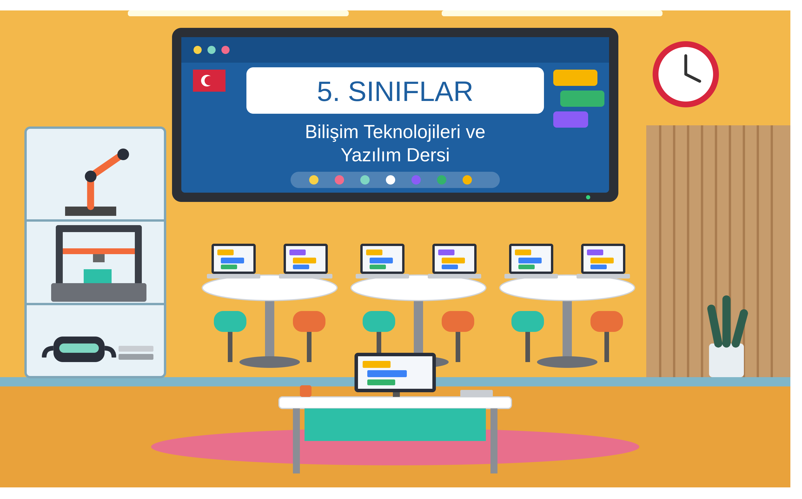
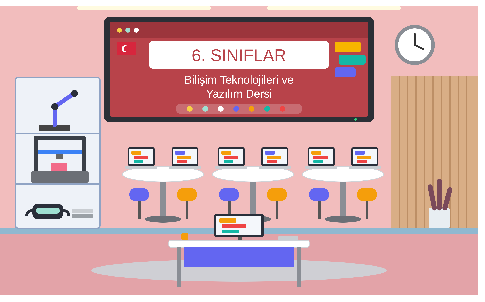

Son Eklenenler

5. Sınıf5. Sınıf Bilişim Teknolojileri
Bilişim teknolojilerini tanır, güvenli ve etik kullanır, dosyalarını düzenler, görsel, belge ve sunum hazırlar, yapay zekâyı sorgular ve blok tabanlı kodlamayla ilk yazılımlarını geliştirir.

6. Sınıf6. Sınıf Bilişim Teknolojileri
Verileri analiz eder, grafiğe döker, ses ve video kurgular, telif ve siber güvenliği öğrenir, yapay zekâ destekli yazılım ürünleri ortaya koyar ve blok tabanlı kodlama ile yazılım geliştirir.